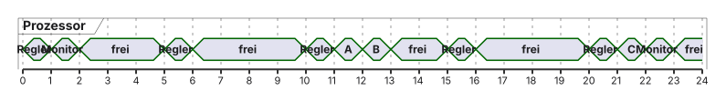

09 · Integrierte Fallstudie und Timing-Verifikation
Periodische Arbeit und aperiodische Anfragen gemeinsam planen
Datenfluss, Zustandslogik und Überwachung verbinden
Modellrechnung, Programmprüfung und Messbefund unterscheiden
Kleine eigene Implementierung auf dem NUCLEO-H755ZI-Q
Diese Fallstudie verbindet die bekannten Bausteine zu einem überprüfbaren Entwurf. Eine periodische Arbeit wird in festen zeitlichen Abständen freigegeben. Aperiodische Anfragen treffen dagegen ohne einen solchen festen Abstand ein. Die zentrale Frage lautet, wie beide auf einem Prozessor zusammenarbeiten können, ohne dass eine dichte Anfragefolge die zeitkritische Funktion unbegrenzt verdrängt. Dafür wenden wir einen Polling Server aus Vorlesung 6 an: Er erhält zu festen Gelegenheiten ein begrenztes Rechenbudget.
Timing-Verifikation bezeichnet hier das begründete Prüfen festgelegter Zeitforderungen. Eine Rechnung im vereinfachten Modell und eine Beobachtung am realen Board sind unterschiedliche Nachweise. Der NUCLEO-H755ZI-Q ist das Entwicklungsboard mit dem STM32H755. Im kleinen Programmieranteil verwenden wir nur seinen Cortex-M4, die eingebauten Leuchtdioden und den Benutzertaster. Es wird keine echte Maschine gesteuert. Die Fallstudie benötigt weder neue externe Elektronik noch einen umfangreichen Firmwareaufbau.
Die bisherigen Bausteine beantworten Teilfragen
Scheduling und Threads
Wer bekommt wann Prozessorzeit?
Queue und begrenzte Übergabe
Welche Anfrage wird angenommen?
Speicher- und Besitzvertrag
Wer verändert Daten und Ausgänge?
Timing-Analyse und Server
Welche Zeitgrenzen sind begründet?
Scheduling ist die Zuteilung von Prozessorzeit. Ein Thread ist ein vom Betriebssystem verwalteter Ausführungspfad; eine konkrete Aktivierung mit abzuarbeitendem Auftrag heißt Job. Eine Queue ist ein begrenzter Nachrichtenpuffer. Aus Vorlesung 5 kennen wir die Trennung zwischen einer kurzen Übergabe und der späteren Verarbeitung. Vorlesung 7 hat gezeigt, dass Datenbesitz und Sichtbarkeit ausdrücklich vereinbart werden müssen. Diese Einsicht gilt auch dann, wenn heute nur ein Prozessorkern arbeitet.
Die Timing-Analyse aus Vorlesung 8 verlangt benannte Ereignisgrenzen und eine geeignete Zeitquelle. Die Serververfahren aus Vorlesung 6 ergänzen einen Vertrag über die zusätzliche Prozessorarbeit. Wir führen diese Teilverträge zusammen. Ein Watchdog wird später als überwachender Zeitgeber verständlich eingeführt. Für die Praxis verwenden wir den bereits dokumentierten eigenständigen Cortex-M4-Start aus Übungsblatt 3; ein zweites laufendes Kernprogramm wird nicht benötigt.
Vier Ergebnisse in 180 Minuten
0–45 min
Fallstudie und Serverrechnung
45–80 min
Datenvertrag und Zeitbefunde
80–105 min
Fortschritt und Fehlerreaktion
105–140 min
eigene kleine Implementierung
140–180 min
Papiertransfer und Abnahme
Am Ende sollen Sie vier zusammenhängende Ergebnisse begründen können: ein vollständiges Taskmodell mit Prioritäten, eine begrenzte Verarbeitung zusätzlicher Anfragen, einen nachvollziehbaren Zeitvertrag für die Fehlerreaktion und eine Abnahme mit getrennten Statuswerten. Eine Task ist ein geplanter Ausführungspfad; ihr Modell beschreibt insbesondere die eigene Rechenzeit, Freigaben und Abschlussfrist. Eine Abnahme vergleicht festgelegte Anforderungen mit den tatsächlich vorliegenden Nachweisen.
Der Ablauf umfasst vier Schulstunden zu je 45 Minuten, insgesamt 180 Minuten. Die ersten 105 Minuten bauen die Fallstudie einschließlich kurzer Verständnisfragen auf. Die Programmierung erhält etwa 35 Minuten auf einer bereits funktionierenden Projektbasis. Danach werden ausgewählte Papieraufgaben besprochen und die Ergebnisse eingeordnet. Das Übungsblatt enthält insgesamt 32 Orientierungspunkte als Klausurvorbereitung; nicht jede Teilaufgabe muss zusätzlich vollständig im Termin bearbeitet werden. Die übrigen Aufgaben eignen sich zur selbstständigen Nachbereitung. Installations- oder Bootfehlersuche gehört in die Vorbereitung, damit die eigene kleine Implementierung im Termin möglich bleibt.
Eine lokale Überwachung mit Zusatzanfragen
Ein Regler bearbeitet periodisch einen synthetischen Eingang
Bedienanfragen werden gepuffert und begrenzt bearbeitet
Eine Überwachung prüft abgeschlossene Kontrollrunden
Die Ausgabe zeigt Zustand und gegebenenfalls einen Fehler
Alle Zeiten und Eingabewerte sind didaktische Annahmen.
Ein Regler bezeichnet in dieser Fallstudie einen periodischen Verarbeitungspfad. Wir rechnen keine vollständige physikalische Regelstrecke und behaupten keine bestimmte Stabilität einer echten Anlage. Der Eingang besteht aus synthetischen Zahlen, also künstlich erzeugten Testwerten. Eine Bedienanfrage kann beispielsweise eine nicht zeitkritische Zustandsabfrage oder eine begrenzte Parameterauswertung darstellen. Ihre Verarbeitung darf die periodische Funktion nicht beliebig verdrängen.
Die Überwachung kontrolliert, ob vereinbarte fachliche Kontrollrunden abgeschlossen werden. Sie betrachtet daher mehr als das bloße Eintreffen neuer Nutzdaten. Die Ausgabe ist zunächst ein logischer Zustand. Auf dem Board stellen Leuchtdioden diesen Zustand dar; sie sind kein sicherheitsgerichteter Aktorausgang. Die Papierfallstudie enthält drei geplante Pfade. Das kleinere Praxisprogramm verwendet anschließend bewusst nur zwei Anwendungsthreads, um Queueverarbeitung und Zustandslogik selbst zu implementieren. Es bildet deshalb nicht sämtliche Zeit- und Überwachungszusagen des Papiermodells als Firmware nach. Diese Grenze bleibt bei der Abnahme ausdrücklich sichtbar.
Anforderungen müssen prüfbar sein
Reglerjob
Abschluss binnen 5 ms ab Freigabe
Zusatzlast
höchstens 2 ms Serverbudget je 10-ms-Periode
Drei-Anfragen-Versuch
alle Antworten höchstens 25 ms
Queue
drei Warteplätze, volle Queue ablehnen und zählen
Fehler im Normalbetrieb
definierter Reaktionszustand binnen 60 ms
Eine Abschlussfrist oder Deadline gibt an, bis wann ein Job ab seiner Freigabe fertig sein muss. Beim Regler sind das fünf Millisekunden. Das Serverbudget begrenzt die zugelassene eigene Prozessorarbeit des Servers in seiner jeweiligen Periode. Es ist noch keine Aussage, dass jede Anfrage innerhalb von zwei Millisekunden beantwortet wird. Warten auf den nächsten Poll und ältere Anfragen kommen hinzu.
Der Drei-Anfragen-Versuch beginnt mit leerer Queue und enthält genau die später angegebenen Ankünfte bei einer, zwei und drei Millisekunden. Die 25-Millisekunden-Forderung bezieht sich auf diesen vollständig beschriebenen Versuch; sie ist keine Zusage für beliebig lange Ankunftsfolgen. Die Queue besitzt drei Warteplätze und lehnt neue Nachrichten bei Überfüllung ab. Der Fehlerreaktionszustand ist ebenfalls festzulegen: Hier ist es eine verriegelte logische Fehleranzeige, nicht das nachgewiesene Stillsetzen einer realen Maschine. Die 60 Millisekunden gelten für betrachtete Fehler ab dem gültigen Normalbetrieb und werden später aus Frischeprüfung, Überwachungsplanung und Ausgangsreaktion zusammengesetzt. Der Anlauf braucht ein zusätzlich festgelegtes eigenes Zeitbudget. Ohne diese Ereignisgrenzen wären die Zahlen nicht überprüfbar.
Fünf Ereignisse begrenzen den Datenweg
\[a\;\longrightarrow\;q\;\longrightarrow\;s\;\longrightarrow\;f\;\longrightarrow\;o\]
\(a,q\) Anfrage angekommen / in Queue angenommen
\(s,f\) Verarbeitung begonnen / abgeschlossen
\(o\) vereinbarte Ausgabe wirksam
Eine Kennung verbindet die Marken derselben Anfrage.
Die Marke a ist der definierte Ankunftszeitpunkt einer Anfrage. q bezeichnet die erfolgreiche Queueannahme, s den ersten Verarbeitungsbeginn, f den Abschluss und o die wirksam gewordene vereinbarte Ausgabe. Die Pfeile geben die sachliche Reihenfolge wieder, keine garantierte Dauer. Eine abgewiesene Anfrage besitzt zwar eine Ankunft und eine Ablehnungsentscheidung, aber keinen späteren erfolgreichen Verarbeitungsabschluss. Für sie darf deshalb kein künstliches Antwortintervall null eingetragen werden.
Die Antwortzeit der Verarbeitung ist f minus a. Soll die Anforderung erst mit der wirksamen Ausgabe enden, lautet das Intervall o minus a. Dieser Unterschied ist schon bei einer Leuchtdiode klein, aber grundsätzlich vorhanden; bei einem realen Kommunikations- oder Aktorpfad kann er erheblich werden. Eine Kennung ist eine eindeutige Nummer des betrachteten Auftrags. Mit ihr verhindern wir, dass die Ankunft eines Auftrags und der Abschluss eines anderen versehentlich ein Zeitpaar bilden. Alle subtrahierten Zeitmarken brauchen dieselbe geeignete oder nachweislich korrelierte Uhr. Damit ist die Messfrage festgelegt, bevor wir Zahlen auswerten.
Drei Pfade mit unterschiedlichen Aufgaben
%%{init: {'theme':'base','htmlLabels':false,'flowchart':{'htmlLabels':false},'themeVariables':{'background':'#FFFFFF','primaryColor':'#FFFFFF','primaryBorderColor':'#E5E5EA','primaryTextColor':'#1D1D1F','lineColor':'#86868B','fontFamily':'Inter, sans-serif'}}}%%
flowchart LR
R["Regler"] --> M["Fortschrittsmonitor"]
Q["Anfragequeue"] --> S["Polling Server"]
R --> Z["Nutzdaten"]
S --> B["Anfrageergebnis"]
M --> F["Fehlerstatus"]
Der Regler verarbeitet seinen periodischen Auftrag. Der Polling Server ist ein Ausführungspfad, der nur zu festen Gelegenheiten ein begrenztes Budget für wartende Zusatzanfragen bekommt. Die Queue davor speichert eine begrenzte Anzahl noch nicht bearbeiteter Nachrichten. Die Überwachung ist ein weiterer periodischer Pfad. Sie prüft einen Nachweis über abgeschlossene Kontrollrunden und setzt bei Verletzung des Frischevertrags einen Fehlerstatus.
Das Datenflussbild liest sich von den Eingängen links zu den jeweiligen Ergebnissen rechts. Die Pfeile zeigen, welche Informationen benötigt werden; sie bilden keine Prozessorzeitachse ab. Insbesondere laufen die drei Pfade auf einem Kern nicht gleichzeitig. Der Nutzdatenzustand, das Anfrageergebnis und der Fehlerstatus sind verschiedene Informationen. Ein fehlerfreies Anfrageergebnis ersetzt keinen Fortschrittsnachweis des Reglers. Ebenso beweist ein weiterlaufender Monitor nicht, dass der Regler noch seine fachliche Runde abschließt. Für die konkrete Firmware muss jeder veränderbare Datensatz und Ausgang einen benannten Besitzer haben. Diese Verantwortlichkeiten bereiten das zeitliche Modell vor, ohne schon seine Fristen zu beweisen.
Das vollständige Ein-Kern-Modell
Regler \(\tau_R\)
\(C_R=1\) ms\(T_R=D_R=5\) mshöchste
Server \(S\)
\(Q_S=2\) ms\(T_S=D_S=10\) msmittlere
Monitor \(\tau_M\)
\(C_M=1\) ms\(T_M=D_M=20\) msniedrigste
Freigaben bei null, feste Prioritäten, Präemption
Keine Blockierung; Zusatzkosten im Modell null
Anfragekosten jeweils genau 1 ms, FIFO
CPU bedeutet Central Processing Unit, hier der einzelne betrachtete Prozessorkern. C ist die eigene CPU-Zeit eines normalen Jobs, Q das verfügbare Serverbudget, T die Freigabeperiode und D die relative Deadline. Die Indizes R, S und M kennzeichnen Regler, Server und Monitor. Tau ist die übliche Bezeichnung einer Task. Der Monitor ist der periodische Überwachungspfad. Höchste Priorität bedeutet, dass der Regler bei Bereitschaft jeden anderen Pfad verdrängt. Präemption ist diese Unterbrechung zugunsten höher priorisierter Arbeit.
Alle periodischen Freigaben beginnen bei null. Ein Serverjob kann insgesamt höchstens zwei Millisekunden eigene Prozessorarbeit erhalten. Jede einzelne Anfrage benötigt genau eine Millisekunde. FIFO bedeutet First In, First Out: Zuerst angenommene Nachrichten werden zuerst entnommen. Kein Pfad wartet unter einem von einem anderen Pfad gehaltenen Schloss. Interrupt-, Wechsel- und Verwaltungskosten sind für die Modellrechnung ausdrücklich null. Es gibt keine zusätzlichen Aufgaben. Diese Annahmen machen die folgenden Rechnungen eindeutig; sie sind keine gemessenen Eigenschaften des STM32-Programms. Für ein reales Ziel müssten zusätzliche Kosten und gegebenenfalls Blockierungszeiten berücksichtigt werden.
Eine Millisekunde Arbeit kann länger antworten
Ein Job: Ankunft bei 1 ms, Ausführung von 8 bis 9 ms.
\[C=1\,\mathrm{ms},\qquad R=f-a=9-1=8\,\mathrm{ms}\]
7 ms warten auf die Zuteilung
1 ms eigene Prozessorarbeit
Antwortzeit umfasst beide Anteile
Ein Job ist ein konkreter Auftrag eines Ausführungspfads. C bezeichnet seine eigene Prozessorarbeit, R die Antwortzeit, a die Ankunft und f den Abschluss. In diesem kleinen eigenständigen Beispiel kommt der Job bei einer Millisekunde an, beginnt erst bei acht und endet bei neun Millisekunden. Seine eine Millisekunde Ausführung ist deshalb nicht mit der acht Millisekunden langen Antwortzeit gleichzusetzen.
Die sieben Millisekunden davor können durch andere Arbeit oder durch eine bewusst erst später zugelassene Bediengelegenheit entstehen. Solange der Pfad wegen höherer Prioritäten nicht zugeteilt wird, kann er ausführungsbereit sein, ohne zu laufen. Die englischen Zustandsnamen sind Ready für bereit und Running für laufend. Bei einem Server kann außerdem noch kein Budget zugelassen sein; dann ist die Anfrage zwar im Puffer, aber nicht sofort ausführbar. Die Antwortzeit zählt alle verstrichenen Anteile zwischen ihren definierten Grenzen. Wir addieren deshalb nicht später nochmals die gesamte fremde Arbeit auf ein bereits gemessenes Antwortintervall: Sie steckt darin schon. Mit dieser Unterscheidung prüfen wir zuerst die einfachste periodische Funktion.
Der Regler bekommt zuerst Prozessorzeit
Für das festgelegte Modell:
\[R_R=C_R=1\,\mathrm{ms}\le D_R=5\,\mathrm{ms}\]
Kein höher priorisierter Pfad
Keine angenommene Ressourcenblockierung
Vier Millisekunden Abstand zur relativen Deadline
R mit Index R ist die Antwortzeit des Reglers, C mit Index R seine eine Millisekunde eigene Prozessorarbeit und D mit Index R seine relative Deadline von fünf Millisekunden. Da der Regler die höchste Priorität besitzt und das Modell keine blockierende Ressource und keine sonstigen Unterbrechungskosten enthält, kann er unmittelbar bei jeder Freigabe beginnen. Sein Abschluss liegt eine Millisekunde danach. Zur Deadline bleiben vier Millisekunden.
Diese einfache Rechnung hängt an den ausdrücklich genannten Annahmen. Würde ein niedriger priorisierter Pfad ein benötigtes Schloss halten, wäre eine Blockierungszeit zu ergänzen. Würde ein Interrupt Rechenzeit entziehen, müsste auch diese Last passend modelliert werden. Ein reales Programm ist daher nicht allein durch die numerisch höchste Threadpriorität automatisch nachgewiesen. Im festgelegten Papiermodell ist die Frist jedoch klar erfüllt. Die Reglerjobs belegen beispielsweise die Intervalle null bis eins, fünf bis sechs und zehn bis elf Millisekunden. Der Polling Server muss seine eigene Arbeit dazwischen einordnen und darf die Reglerpriorität nicht umgehen.
Die Zusatzlast erhält ein Budget
\[Q_S=2\,\mathrm{ms},\qquad T_S=10\,\mathrm{ms},\qquad
U_S=\frac{Q_S}{T_S}=20\,\%\]
Bei Anfragekosten von 1 ms reichen 2 ms Budget für zwei Anfragen.
Budget ist eigene CPU-Zeit, keine verstrichene Wandzeit.
Q mit Index S ist das Serverbudget und T mit Index S die Serverperiode. U mit Index S bezeichnet den zugehörigen nominellen Prozessoranteil. Zwei Millisekunden eigene Arbeit in einer Zehn-Millisekunden-Periode entsprechen einem Fünftel, also 20 Prozent. CPU bedeutet Central Processing Unit, hier der geplante Prozessorkern. Eine Präemption durch den Regler verbraucht im Modell kein Serverbudget, weil währenddessen nicht der Server rechnet.
Die Anfragen besitzen jeweils genau eine Millisekunde eigene CPU-Zeit. Daher kann eine vollständig verfügbare Budgetmenge zwei vollständige Anfragen abarbeiten. Diese Umrechnung wäre bei unbekannten oder unterschiedlichen Anfragekosten nicht zulässig. Ein Programm, das einfach zwei beliebige Funktionen aufruft, implementiert noch kein Zwei-Millisekunden-Budget. Die periodische Begrenzung beschreibt außerdem nicht ohne weitere Analyse jeden beliebig verschobenen Zehn-Millisekunden-Ausschnitt. Maßgeblich sind die konkreten Serverregeln und ihre Freigaben. Wir untersuchen hier ausschließlich den Polling Server. Andere Nachfüllregeln dürfen nicht stillschweigend dieselbe Interferenzrechnung erhalten.
Der Polling Server hat eindeutige Regeln
Logische Pollprüfung bei \(0,10,20,\ldots\) ms
Wartet Arbeit, stehen höchstens 2 ms Budget bereit
Leere Queue beim Poll: Budget dieser Periode verfällt
Nach Anfrageabschluss: keine weitere Arbeit → Restbudget verfällt
Während aktiver Bedienung dürfen neue Anfragen Restbudget nutzen
Neue Ankunft am Pollzeitpunkt zählt vor der Prüfung
Polling bedeutet wiederholtes Prüfen zu festgelegten Gelegenheiten. Unser Polling Server prüft logisch bei ganzzahligen Vielfachen seiner Zehn-Millisekunden-Periode, ob Anfragen warten. FIFO heißt First In, First Out, also Entnahme in Annahmereihenfolge. Wird das Budget aufgebraucht, wartet weitere Arbeit auf die nächste Gelegenheit. Nach Abschluss der aktuellen Anfrage prüft der Server, ob weitere Arbeit wartet. Falls nicht, endet die Bedienung und Restbudget wird verworfen. Das Get, also die Entnahme der letzten Nachricht, darf die bereits begonnene Anfrage nicht abbrechen. Während einer noch aktiven Bedienung neu eintreffende Anfragen dürfen verbleibendes Budget nutzen; nach Bedienende warten neue Ankünfte dagegen bis zum nächsten Poll.
Wichtig ist die Modellkonvention zum Prüfzeitpunkt: Die Entscheidung, ob bei null Arbeit vorliegt, fällt logisch bei null und nicht erst dann, wenn der Server nach höher priorisierter Arbeit tatsächlich zu rechnen beginnt. Eine gleichzeitig ankommende Anfrage wird vor dieser Prüfung eingereiht. Damit entstehen keine offenen Randfälle. Ein realer Thread, der erst nach seiner Zuteilung eine aktuelle Queue prüft, kann ein anderes Randverhalten besitzen. Die kleine Praxis später illustriert deshalb nur eine begrenzte Batchverarbeitung und behauptet keine exakte Nachbildung dieser idealisierten Budgetprüfung. Im Papiermodell bleiben die Regeln unverändert, damit Zeitachse und Rechnung dieselbe Bedeutung haben.
Ein leerer Poll verschenkt eine Gelegenheit
0 ms
Queue leer, Pollprüfung
Budget verfällt
1 ms
Anfrage A kommt an
A wartet
10 ms
nächster Poll, A wartet
Budget wieder verfügbar
10–11 ms
Regler läuft
Server muss noch warten
Auch ein freier Prozessor stellt verlorenes Budget nicht wieder her.
Die Queue ist der Nachrichtenpuffer. Bei null Millisekunden enthält sie keine Anfrage. Nach der festgelegten Pollingregel verfällt damit das Budget dieser ersten Serverperiode. Die Anfrage A trifft eine Millisekunde später ein. Obwohl danach zeitweise Prozessorzeit frei sein kann, darf der Server A mit dem verlorenen Budget nicht nachträglich bedienen. Erst der Poll bei zehn Millisekunden eröffnet eine neue Bediengelegenheit.
Zu diesem Zeitpunkt wird zugleich ein Reglerjob freigegeben. Der Regler hat höhere Priorität und läuft von zehn bis elf Millisekunden. Der Server kann seine Anfrage daher frühestens bei elf beginnen. Das Beispiel trennt zwei verschiedene Warteursachen: zunächst fehlendes zugelassenes Budget, anschließend höher priorisierte Prozessorarbeit. Beides gehört zur Anfrageantwort. Es wäre falsch, bereits bei einer Millisekunde eine zusätzliche sofortige Bedienung einzuzeichnen; das entspräche nicht mehr dem vereinbarten Polling Server. Der Budgetverfall schützt den restlichen Zeitplan durch eine klare Regel, kann aber die Antwort aperiodischer Arbeit verlängern.
Drei Anfragen treffen kurz hintereinander ein
A bei 1 ms, B bei 2 ms, C bei 3 ms · Queue zunächst leer.

Die waagerechte Zeitachse ist in Millisekunden angegeben. Die einzige Spur zeigt den jeweils laufenden Pfad des einen Prozessors. Regler bezeichnet einen periodischen Reglerjob mit einer Millisekunde eigener Arbeit. Monitor ist der Überwachungsjob mit ebenfalls einer Millisekunde. A, B und C sind die drei konkreten Anfragen, die innerhalb des Polling Servers ausgeführt werden. Frei bedeutet, dass in diesem Modell keiner dieser Pfade Prozessorzeit benötigt. Das Bild ist eine gerechnete Planung, keine gemessene Ereignisspur.
Bei null ist das Serverbudget mangels wartender Anfrage verloren. Der Regler läuft null bis eins, der Monitor eins bis zwei. Der nächste Regler läuft fünf bis sechs. Bei zehn wird neues Budget zugelassen; nach dem Regler zehn bis elf bearbeitet der Server A von elf bis zwölf und B von zwölf bis dreizehn. Beide zusammen verbrauchen die zwei Millisekunden Budget. C bleibt trotz freier Zeit ab dreizehn liegen. Bei zwanzig folgt wieder zunächst der Regler, danach C von einundzwanzig bis zweiundzwanzig und schließlich der jetzt ebenfalls bereite Monitor. Damit wird sichtbar, warum zusätzliche Anfragen auch niedrigere Prioritäten nur begrenzt belasten sollen.
Die Anfrageantworten vollständig ausrechnen
A
1 ms
12 ms
11 ms
B
2 ms
13 ms
11 ms
C
3 ms
22 ms
19 ms
Alle drei erfüllen das 25-ms-Ziel dieses Versuchs.
Eine Anfrage ist eine einzelne in die Queue eingereihte Zusatzarbeit. a bezeichnet ihre Ankunft und f den Abschluss ihrer Verarbeitung. Die Antwortzeit ist die Differenz f minus a. A kommt bei einer Millisekunde und endet bei zwölf, also nach elf Millisekunden. B kommt bei zwei und endet bei dreizehn; auch ihre Antwort beträgt elf Millisekunden. C kommt bei drei und endet erst bei zweiundzwanzig, also nach neunzehn Millisekunden.
Alle drei Antworten liegen unter der für diesen Drei-Anfragen-Versuch geforderten Grenze von 25 Millisekunden. Die eigene CPU-Zeit, also Central Processing Unit-Zeit auf dem Kern, beträgt dennoch für jede Anfrage nur eine Millisekunde. C benötigt kein längeres Rechenverfahren, sondern wartet eine weitere Pollperiode. Das Beispiel macht keine Aussage über beliebig lange Anfragefolgen. Es beginnt mit leerer Queue, nimmt genau diese drei Ankünfte an und enthält keine weitere Störung. Die Tabelle ist ein Modellbefund. Ob ein reales Programm diese Ereignisse ebenso erzeugt und begrenzt, wäre eine gesonderte Implementierungs- und Timingprüfung.
Der Serverjob hat eine eigene Antwortzeit
Für ein vollständig genutztes Budget:
\[R_S=Q_S+\left\lceil\frac{R_S}{T_R}\right\rceil C_R\]
Fixpunkt in ms: \(2\to3\to3\)
Einzelanfrage ohne ältere Arbeit, konservativ: \(R_{\mathrm{Anfrage}}\le T_S+R_S=13\,\mathrm{ms}\)
R mit Index S ist die Antwortzeit eines Serverjobs, gemessen ab seiner periodischen Freigabe bis zum Abschluss seines maximalen Budgets Q mit Index S. T mit Index R und C mit Index R sind Periode und eigene CPU-Zeit des höher priorisierten Reglers: fünf und eine Millisekunde. Die Aufrundung zählt konservativ, wie viele Reglerjobs im betrachteten Antwortintervall stören können. Blockierung und Zusatzkosten fehlen entsprechend unserem Modell.
Die Iteration beginnt mit zwei Millisekunden Budget. In diesem Intervall kann ein Reglerjob stören, daher ergibt sich drei. Auch bei drei Millisekunden bleibt es bei einem Reglerjob; drei ist der Fixpunkt. Diese Rechnung ist eine konservative periodische Budgetbetrachtung für unseren Polling Server. Sie gilt nicht unverändert für andere Nachfüllregeln.
Eine einzelne Anfrage ohne ältere Arbeit kann gerade eine Pollprüfung verpasst haben. Als einfache sichere Schranke addieren wir deshalb höchstens eine Serverperiode von zehn Millisekunden und die dreimillisekündige Serverantwort. Die 13 Millisekunden sind konservativ, nicht als exakt erreichbarer Maximalwert behauptet. Bei älteren Anfragen gilt diese Einzelanfrageschranke nicht: C aus dem vorherigen Beispiel wartet zusätzlich eine Bedienperiode und antwortet nach 19 Millisekunden.
Auch die Überwachung muss rechtzeitig laufen
\[R_M=C_M+\left\lceil\frac{R_M}{T_R}\right\rceil C_R
+\left\lceil\frac{R_M}{T_S}\right\rceil Q_S\]
\[R_M^{(0)}=1,\quad R_M^{(1)}=1+1+2=4,\quad
R_M^{(2)}=1+1+2=4\;\mathrm{ms}\]
\[R_M=4\,\mathrm{ms}\le D_M=20\,\mathrm{ms}\]
R mit Index M bezeichnet die Antwortzeit des Monitors, also des Überwachungspfads. C mit Index M ist seine eine Millisekunde eigene Prozessorarbeit. Die beiden aufgerundeten Terme berücksichtigen höher priorisierte Reglerjobs und Serverbudgets. T mit Index R ist fünf Millisekunden, C mit Index R eine Millisekunde, T mit Index S zehn Millisekunden und Q mit Index S zwei Millisekunden. D mit Index M ist die relative Monitorfrist von zwanzig Millisekunden.
Ausgehend von einer Millisekunde können ein Reglerjob und ein volles Serverbudget stören. Das ergibt vier Millisekunden. Auch in einem vier Millisekunden langen Intervall passen nach der konservativen Aufrundung weiterhin ein Reglerjob und ein Serverbudget; der Fixpunkt bleibt vier. Die Monitorfrist ist damit im Modell eingehalten. Die konkrete Zeitachse mit nur einer verbliebenen Anfrage bei zwanzig Millisekunden zeigt eine kürzere Monitorantwort von drei Millisekunden. Das widerspricht der Vier-Millisekunden-Schranke nicht: Diese rechnet mit einem vollständig genutzten Serverbudget. Für die Fehlerreaktion brauchen wir später die begründete Schranke, nicht bloß den günstigeren Einzelfall.
45 Prozent Last sind ein Zwischenbefund
\[U=\frac{C_R}{T_R}+\frac{Q_S}{T_S}+\frac{C_M}{T_M}
=\frac15+\frac2{10}+\frac1{20}=0{,}45\]
Regler
1 ms
5 ms
Serverjob
3 ms
10 ms
Monitor
4 ms
20 ms
Die Fristenprüfung braucht mehr als \(U<1\) .
U ist die Gesamtauslastung, also die Summe der nominellen Prozessoranteile. C bezeichnet die eigene Rechenzeit, Q das Serverbudget und T die jeweilige Periode. Die Indizes R, S und M stehen für Regler, Server und Monitor. Ein Fünftel plus zwei Zehntel plus ein Zwanzigstel ergibt neun Zwanzigstel, also 0,45 oder 45 Prozent. Verfällt Serverbudget, kann die tatsächlich genutzte Zeit darunterliegen; für den Lastansatz verwenden wir trotzdem das volle Budget.
Eine Auslastung unter eins bedeutet, dass die aufsummierte nominelle Arbeit nicht die gesamte verfügbare Zeit übersteigt. Sie garantiert bei festen Prioritäten aber nicht jede beliebige Deadline. Ein Task kann trotz insgesamt freier Zeit zu spät zugeteilt werden. Unsere positive Aussage stützt sich deshalb zusätzlich auf die berechneten Antwortschranken: eine, drei und vier Millisekunden liegen unter den jeweils fünf, zehn und zwanzig Millisekunden langen relativen Fristen. Würde für einen anderen gültigen Fall beispielsweise eine Antwort von fünf bei einer Deadline von vier Millisekunden folgen, wäre diese Frist trotz einer Gesamtauslastung von nur 60 Prozent verletzt. Die Art des Nachweises ist entscheidend.
Das Budget verhindert keine volle Queue
Der Server verarbeitet höchstens zwei 1-ms-Anfragen je Pollperiode
Ein Burst kann mehr Anfragen liefern, als gerade bedient werden
Die Queue begrenzt wartende Nachrichten
Volle Queue: neue Anfrage ablehnen und zählen
Begrenzte Zusatzarbeit und begrenzter Speicher sind zwei Verträge.
Ein Burst ist eine kurze dichte Folge von Anfragen. Die Queue ist unser Nachrichtenpuffer mit begrenzter Kapazität. Der Polling Server darf im Modell höchstens zwei Anfragen mit jeweils einer Millisekunde eigener Rechenzeit pro zugelassener Bediengelegenheit verarbeiten. Treffen mehr Anfragen ein, können sie bis zur nächsten Gelegenheit warten. Liefern die Eingänge dauerhaft schneller neue Arbeit, als der Server abarbeitet, wächst der Rückstau, bis der endliche Puffer voll ist.
Das Budget schützt die geplante zusätzliche Prozessorlast, aber erzeugt keinen unendlichen Speicher und keine unbegrenzte Antwortgarantie. Umgekehrt schützt ein begrenzter Puffer den Speicherbedarf, ohne die Laufzeit beliebiger Nachrichtenfunktionen zu begrenzen. Die Überlastregel lautet hier: Eine neue Nachricht findet bei voller Queue keinen Platz, wird abgewiesen und als Drop gezählt. Drop bedeutet in diesem Zusammenhang gezielte, dokumentierte Abweisung. Das ist fachlich ehrlicher als eine stillschweigende Behauptung von Verlustfreiheit. Welche Anfragen eine Anwendung ablehnen darf und welche Mindestdienste erhalten bleiben müssen, ist Teil ihrer Anforderung und kein automatisches Ergebnis des Servernamens.
Queuezustände lassen sich auf Papier verfolgen
Kapazität drei · anfangs leer · FIFO.
Put 1, Put 2
1, 2
beide angenommen
Get
2
1 entnommen
Put 3, Put 4
2, 3, 4
beide angenommen
Put 5
2, 3, 4
5 abgewiesen
Get
3, 4
2 entnommen
FIFO bedeutet First In, First Out: Die zuerst angenommene Nachricht wird zuerst entnommen. Put bezeichnet den Versuch, eine Nachricht einzufügen. Get bezeichnet die Entnahme einer vorhandenen Nachricht. Die Zahlen sind Nachrichtenkennungen, keine Prioritäten. Die Queue beginnt leer und besitzt drei Plätze. Nach Put eins und zwei liegen zwei Nachrichten vor. Das erste Get entfernt eins und schafft einen freien Platz zusätzlich zu dem schon zuvor freien dritten Platz.
Put drei und vier füllen die Queue nun mit zwei, drei und vier. Für Nachricht fünf existiert kein Platz; der gescheiterte Put verändert den Inhalt nicht. Das letzte Get entnimmt zwei. Insgesamt gab es fünf Einfügeversuche, vier Annahmen, eine Abweisung und zwei Entnahmen. Zwei angenommene Nachrichten liegen noch im Puffer. Die Entnahme ist außerdem nicht automatisch der Abschluss ihrer fachlichen Verarbeitung: Ein entnommener Auftrag kann noch in Arbeit sein. Genau deshalb trennt die folgende Bilanz Pufferbestand, laufende Arbeit und abgeschlossene Arbeit. Eine zeitlich verteilte Eingangsfolge mit zusätzlichen Gets kann andere Dropzahlen liefern als dieser vollständig angegebene Ablauf.
Eine kleine Datenbilanz reicht hier aus
\[I=A+D,\qquad A=Q+F+P\]
\(I,A,D\) abgeschlossene Putversuche, Annahmen, Abweisungen
\(Q,F,P\) noch in Queue, gerade in Arbeit, abgeschlossen
Voraussetzung: keine weiteren Fehlerpfade, konsistenter Prüfpunkt.
I ist die Anzahl abgeschlossener Putversuche, also Versuche zum Einfügen. A zählt erfolgreich angenommene Nachrichten und D die wegen voller Queue abgewiesenen. Im hier vereinfachten Modell gibt es keine weiteren Rückgabe- oder Verarbeitungsfehler. Jede angenommene Nachricht liegt entweder noch im Puffer Q, ist nach Entnahme gerade in Bearbeitung F oder wurde bereits vollständig abgeschlossen P. Dabei ist Q in dieser Bilanz der Queuebestand; das Serverbudget wird dagegen ausdrücklich Q mit Index S geschrieben.
Für die vorherige Folge gilt nach zwei vollständig beendeten Bearbeitungen: fünf gleich vier plus eins und vier gleich zwei plus null plus zwei. Wenn die zweite entnommene Nachricht noch in Bearbeitung wäre, stünde stattdessen F gleich eins und P gleich eins. Die Bilanz wird an einem konsistenten Prüfpunkt gelesen, an dem nicht gerade ein Übergang halb aktualisiert ist. Ein beliebiges Live-Lesen mehrerer Zähler ist nicht automatisch ein solcher Punkt. Ein reales Programm muss zusätzliche unerwartete Rückgabefehler gesondert behandeln; sie dürfen nicht fälschlich als volle Queue ausgegeben werden. Mit dieser Bilanz bleiben Annahme, laufende Arbeit und Abschluss im lokalen Kanal nachvollziehbar.
Überlast braucht eine vorher festgelegte Antwort
Neu ablehnen
bisher angenommene FIFO-Aufträge behalten
Veraltete Arbeit verwerfen
nur bei ausdrücklich erlaubtem Datenvertrag
Last begrenzen
Eingänge, Kosten oder Dienstmenge reduzieren
Unbegrenztes Puffern verschiebt das Problem in Speicher und Latenz.
FIFO heißt First In, First Out und bezeichnet die Verarbeitung in Annahmereihenfolge. Unsere Fallstudie lehnt bei voller Queue neue Anfragen ab und lässt bereits angenommene Aufträge unverändert im Puffer. Eine andere Anwendung könnte veraltete Arbeit gezielt verwerfen. Das ist jedoch nur korrekt, wenn ihr Datenvertrag diese Auslassung erlaubt. Ein Auftrag zum Buchen einer Zahlung darf beispielsweise nicht wie ein ersetzbarer Zustandswert behandelt werden.
Lastbegrenzung kann die Anzahl neuer Eingaben, die maximale Rechenzeit je Eingabe oder die pro Bediengelegenheit zugelassene Arbeit betreffen. Ein größerer Puffer ist allein keine zeitliche Lösung: Er benötigt mehr Speicher und lässt mehr alte Arbeit vor einer neuen Anfrage warten. Ohne obere Ankunfts- und Kostenannahmen entsteht daraus keine endliche allgemeine Antwortgarantie. Für jeden verworfenen Auftrag soll nachvollziehbar bleiben, ob er gar nicht angenommen oder später bewusst entfernt wurde. Im kleinen Programmieranteil verwenden wir deshalb klar nummerierte Eingaben und zählen fehlgeschlagene Queueannahmen im zuständigen Quellthread. Das Statusbild bleibt von der Timingbewertung getrennt.
FIFO und Latest Value lösen verschiedene Aufgaben
FIFO
angenommene Nachrichten in Reihenfolge bearbeiten
Latest Value
nur der jeweils neueste gültige Zustand zählt
Ein Filter über alle Proben verträgt keine stillschweigend ersetzte Folge.
FIFO steht für First In, First Out. Es erhält die Reihenfolge angenommener Nachrichten, solange keine zusätzlich erlaubten Verwerfungen stattfinden. Latest Value bedeutet neuester Wert: Eine neue Veröffentlichung darf einen noch nicht verarbeiteten alten Stand ersetzen. Das kann für eine Anzeige des aktuellen Zustands sinnvoll sein. Es ist aber ein anderer Datenvertrag als die vollständige Verarbeitung aller angenommenen Aufträge.
Ein Filter berechnet aus einer Eingabefolge eine neue Folge, beispielsweise einen gleitenden Mittelwert. Wenn sein fachlicher Zweck jede ursprüngliche Probe voraussetzt, dürfen ersetzte Zwischenwerte nicht einfach fehlen. Soll er dagegen bewusst auf der tatsächlich beobachteten Teilfolge arbeiten, muss diese Bedeutung ausdrücklich genannt werden. Die folgende Rechnung benutzt eine vollständig gegebene Verarbeitungsfolge und ergänzt keine unbekannten Werte. In der vereinfachten Praxis wird eine lokale FIFO-Queue benutzt. Damit bleiben Filterrechnung und Kanalbedeutung für die kleine Aufgabe überschaubar.
Den gleitenden Mittelwert vollständig verfolgen
Fenster höchstens drei Werte · am Anfang keine Nullauffüllung.
30
30
30
120
30, 120
75
150
30, 120, 150
100
60
120, 150, 60
110
0
150, 60, 0
70
0
60, 0, 0
20
Ein gleitender Mittelwert bildet den Durchschnitt der letzten höchstens drei tatsächlich verarbeiteten Eingabewerte. Das Fenster bezeichnet diese begrenzte Menge aufeinanderfolgender Werte. Am Anfang sind erst eine beziehungsweise zwei Proben vorhanden; wir dividieren deshalb durch die tatsächliche Anzahl und ergänzen keine künstlichen Nullen. Die Eingaben sind nichtnegative dimensionslose synthetische Werte. Bei nicht ganzzahligem Ergebnis würde die vereinbarte nichtnegative Ganzzahldivision abrunden.
Der erste Mittelwert ist dreißig. Aus dreißig plus hundertzwanzig geteilt durch zwei folgen fünfundsiebzig. Mit hundertfünfzig beträgt die Summe dreihundert, geteilt durch drei also hundert. Der vierte Eingang ersetzt die älteste Dreißig: hundertzwanzig plus hundertfünfzig plus sechzig ergeben dreihundertdreißig und damit hundertzehn. Danach folgen zweihundertzehn durch drei gleich siebzig und sechzig durch drei gleich zwanzig. Der Filter arbeitet ausschließlich auf der genannten Folge. Fehlt eine Probe im Kanal, darf ihr Wert nicht erfunden werden. Diese Tabelle liefert anschließend die Eingangsfolge für die Hysterese und macht die Verbindung von Rechenfunktion und Zustandslogik nachvollziehbar.
Hysterese speichert einen Zustand
Ab 90: Zustand hoch
Bis einschließlich 60: Zustand niedrig
Dazwischen: bisherigen Zustand halten
Anfangszustand: niedrig
Hysterese bedeutet, dass der Ausgang nicht allein vom aktuellen Wert, sondern im Zwischenbereich auch vom vorherigen Zustand abhängt. Die obere Schwelle ist einschließlich neunzig, die untere einschließlich sechzig. Ein Wert dazwischen verändert den gespeicherten Zustand nicht. Anfangs ist der Zustand niedrig. Die Kennzeichnung null steht für niedrig und eins für hoch.
Die Filterfolge von der vorherigen Folie lautet dreißig, fünfundsiebzig, hundert, hundertzehn, siebzig und zwanzig. Dreißig liegt unter der unteren Schwelle und setzt niedrig. Fünfundsiebzig hält niedrig. Hundert erreicht die obere Schwelle und setzt hoch; hundertzehn lässt hoch bestehen. Siebzig liegt im Zwischenband und hält deshalb hoch, obwohl derselbe Siebzigwert bei einem zuvor niedrigen Zustand niedrig gehalten hätte. Zwanzig setzt schließlich niedrig. Gerade dieser Vergleich erklärt die Erinnerungseigenschaft. In der Praxis muss der Anfangszustand ebenso festgelegt sein wie das Verhalten genau an den beiden Grenzen. Zwei voneinander unabhängige Vergleiche mit willkürlich verschobenen Grenzoperatoren würden leicht eine andere Funktion ergeben. Die eigene Implementierung wird deshalb mit Grenzwerten und einer Folge durch das Halteband geprüft.
Eine Sequenzlücke braucht einen definierten Kanal
Neue einfache Praxis:
Quelle vergibt Eingabenummer vor dem Queue-Put
Verarbeitung akzeptiert nur strikt steigende Nummern
Sprung von 2 auf 5: Nummern 3 und 4 fehlen
Gelbe Anzeige verriegelt den Lückenhinweis
Die Nummer gehört zum Eingabeversuch, auch bei Queueabweisung.
Eine Sequenznummer ist eine fortlaufende Eingabekennung. In unserem einfachen Praxiskanal wird sie vor jedem Versuch vergeben, eine Nachricht in die Queue einzufügen. Put bedeutet Einfügeversuch. Ein wegen voller Queue abgewiesener Versuch verbraucht daher ebenfalls seine Nummer. Die Verarbeitung erhält Nachrichten in Reihenfolge und akzeptiert nur Nummern, die strikt größer als die zuletzt verarbeitete sind. Springt die Nummer von zwei auf fünf, fehlen die Eingaben drei und vier in der verarbeiteten Folge.
Das allein zeigt noch nicht, wann genau die Abweisung erfolgt ist oder wie lange die verbleibenden Nachrichten gewartet haben. Der Quellthread führt seinen eigenen Annahme- und Abweisungsbefund. In dieser Architektur liegt genau ein möglicher Ablehnungspunkt im lokalen Queuepfad. Für die Deutung der Nummer muss eindeutig bleiben, dass sie jeden Eingabeversuch zählt und nicht erst dessen erfolgreiche Verarbeitung. Die gelbe Leuchtdiode merkt sich den Lückenhinweis bis zum Neustart. Ein solcher Hinweis ist eine Datenpfadbeobachtung, keine Diagnose der Ursache eines beliebigen Hardwarefehlers. Für den begrenzten Test werden Nummernüberlauf und unkontrollierter Neustart ausdrücklich ausgeschlossen.
Ein Ausgang hat einen verantwortlichen Besitzer
Quelle erzeugt Nachrichten und meldet Annahmefehler lokal
Queue transportiert Werte statt fremder Zeigerlebensdauern
Verarbeitung besitzt Hysterese, letzte Nummer und Fehlermerker
Nur die Verarbeitung schreibt die drei LED-Ausgänge
Kurze Zustandsänderung, kein blockierendes Warten im Verarbeitungsschritt.
LED bedeutet Light Emitting Diode, Leuchtdiode. Ein Besitzer ist hier der einzige Anwendungspfad, der den betreffenden Zustand oder Ausgang verändert. Der Quellthread erzeugt Nachrichten. Die Queue kopiert den vereinbarten Nachrichtendatensatz mit Nummer und Wert. Damit muss die Verarbeitung nicht später auf einen schon ungültigen lokalen Zeiger der Quelle zugreifen. Die Quelle führt ihre Diagnosezähler selbst; ein beliebiges ungesichertes gemeinsames Mehrschritt-Update wird nicht eingeführt.
Der Verarbeitungsthread besitzt den gespeicherten Hysteresezustand, die letzte verarbeitete Nummer und den verriegelten Lückenmerker. Er schreibt auch die drei LED-Ausgänge. So konkurrieren nicht zwei Anwendungsthreads um denselben Ausgangszustand. Der einzelne Verarbeitungsschritt berechnet und schreibt nur seine begrenzten Ergebnisse; er wartet weder auf eine weitere Nachricht noch auf eine Verzögerung. Das periodische Blockieren gehört an die klar beschriebene Stelle der Threadschleife. Ein kurzer Schritt ist gut nachvollziehbar, aber seine tatsächliche maximale Laufzeit auf dem Board ist dadurch noch nicht numerisch bewiesen. Dazu gehören Zielbuild und geeignete Timingprüfung, die wir vom logischen Funktionstest unterscheiden.
Ein Messvertrag hat vier notwendige Angaben
Ereignisgrenzen
Ankunft bis Abschluss oder bis Ausgabe?
Uhr und Einheit
Welche Zeitquelle, welche Auflösung?
Zuordnung
Welche Kennung verbindet das Paar?
Bedingungen
Welche Last, Eingaben und erfassten Pfade?
Modellwerte und Boardmessungen werden getrennt bezeichnet.
Ein Messvertrag legt fest, welche konkrete Zeitfrage eine Aufzeichnung beantworten soll. Die Ereignisgrenzen bestimmen Anfang und Ende. Eine Anfrageantwort kann von der Softwareannahme bis zum Verarbeitungsabschluss reichen; eine Ende-zu-Ende-Forderung könnte zusätzlich die wirksame Ausgabe verlangen. Die Zeitquelle benötigt eine passende Einheit und Auflösung. Ein Millisekundenzähler kann keine verlässliche feine Mikrosekundenmessung ersetzen. Eine gemeinsame oder nachweislich korrelierte Uhr ist Voraussetzung für die Subtraktion.
Die Kennung verbindet zwei Marken desselben Auftrags. Bedingungen umfassen die tatsächliche Last, Eingabefolge, Buildkonfiguration und die Abdeckung der interessierenden Pfade. Buildkonfiguration bedeutet die verwendete Übersetzung und Programmeinstellung. Ein nicht aufgezeichnetes Ereignis darf nicht stillschweigend aus der Auswertung verschwinden, wenn die Aussage Vollständigkeit voraussetzt. Die folgenden Zahlen sind ausdrücklich Lehrdaten einer gemeinsamen Modelluhr. Wir behaupten damit weder einen ausgeführten Boardversuch noch eine bestimmte maximale Laufzeit eines STM32-Programms. Die Begrenzung der Aussage ist Teil einer fachlich richtigen Messauswertung und kein nachträglicher Zusatz.
Gültige Zeitpaare getrennt bewerten
Gemeinsame Modelluhr · Forderung: Antwort höchstens 8 ms.
11
2 ms
8 ms
6 ms
12
20 ms
28 ms
8 ms
13
40 ms
49 ms
9 ms
Der dritte Auftrag verletzt die Forderung um 1 ms.
Eine Kennung ist die eindeutige Nummer des betrachteten Auftrags. Die Ankunft und der Abschluss jeder Tabellenzeile stammen von derselben gemeinsamen Modelluhr. Die Antwortzeit ist jeweils Abschluss minus Ankunft. Für Kennung elf ergeben acht minus zwei gleich sechs Millisekunden. Für zwölf ergeben achtundzwanzig minus zwanzig gleich acht. Für dreizehn ergeben neunundvierzig minus vierzig gleich neun Millisekunden.
Die Forderung erlaubt höchstens acht Millisekunden. Der erste Auftrag erfüllt sie, der zweite liegt genau auf der eingeschlossenen Grenze und der dritte überschreitet sie um eine Millisekunde. Der dritte Wert bleibt ein gültiger Messbefund beziehungsweise hier ein gültiger Modellbefund. Wir dürfen ihn nicht löschen, nur weil die Frist verletzt ist. Die Tabelle ist eine eigenständige Auswertungsübung und keine Fortsetzung der zuvor angenommenen Ein-Millisekunden-Anfragefunktion. Eine Messauswertung muss außerdem benennen, ob alle benötigten Aufträge erfasst wurden. Für einen fehlenden Abschluss existiert kein vollständiges Zeitpaar; seine Antwort darf nicht als null eingetragen werden. Schon eine gültig beobachtete Verletzung widerlegt die Behauptung, alle beobachteten Aufträge hätten diese Frist eingehalten.
Jitter nur mit einer benannten Bezugsgröße
Antworten der Lehrstichprobe: 6, 8, 9 ms.
\[R_{\max}=9\,\mathrm{ms},\qquad R_{\min}=6\,\mathrm{ms}\]
\[J_{\mathrm{Antwort}}=R_{\max}-R_{\min}=3\,\mathrm{ms}\]
Diese Spanne ist weder eine Periodenabweichung noch eine zusätzliche CPU-Zeit.
Jitter bezeichnet eine zeitliche Schwankung und braucht eine konkret benannte Bezugsgröße. Hier betrachten wir ausschließlich die Spanne der Antwortzeiten in der gegebenen Lehrstichprobe. R mit Index max ist die größte beobachtete Antwort, R mit Index min die kleinste. J mit Index Antwort ist ihre Differenz. Aus neun minus sechs folgen drei Millisekunden.
Diese Spanne sagt nicht, dass die periodischen Freigaben um drei Millisekunden schwanken. Sie ist auch kein zusätzlicher Rechenzeitanteil, den wir zur bereits neun Millisekunden langen Antwort nochmals addieren müssten. CPU bedeutet Central Processing Unit, also der Prozessor; dessen eigene Arbeit ist eine andere Größe. Ebenso ist die beobachtete Spanne keine bewiesene obere Grenze aller künftig möglichen Antwortschwankungen. Sie beschreibt genau die drei gegebenen Aufträge. Wenn eine Anwendung eine Jitterforderung besitzt, muss sie festlegen, ob Freigabeabstände, Ausgabestarts, Antwortzeiten oder eine andere Größe gemeint sind. Die fachlich korrekte Beschriftung verhindert, dass eine richtig gerechnete Differenz anschließend für die falsche Anforderung verwendet wird.
Ein Messmaximum ist keine Worst-Case-Garantie
100 gültig beobachtete Jobs · größtes Antwortintervall 2,1 ms · Frist 3 ms.
Die beobachteten Jobs erfüllen die Frist
Unbeobachtete Last- und Fehlerpfade bleiben offen
Ein gültiger Wert über 3 ms wäre ein Gegenbeispiel
Eigene Rechenzeit und Antwortzeit bleiben verschieden
Ein Job ist eine konkrete Aktivierung eines Ausführungspfads. Das Messmaximum ist der größte Wert einer endlichen Beobachtung. WCET steht für Worst-Case Execution Time und bedeutet maximale eigene Ausführungszeit unter festgelegten Voraussetzungen. Schon begrifflich ist ein gemessenes Antwortintervall keine WCET, weil die Antwort auch Warte- und Störanteile enthält. Darüber hinaus beweist eine endliche Stichprobe nicht automatisch, dass alle möglichen Laufzeitpfade erfasst wurden.
Aus hundert vollständig und gültig beobachteten Jobs mit maximal 2,1 Millisekunden Antwort bei einer Drei-Millisekunden-Frist folgt die konkrete positive Aussage: Diese beobachteten Jobs erfüllen die Frist. Eine allgemeine Garantie für jedes spätere Auftreten benötigt zusätzliche Argumente, beispielsweise ein geeignetes Modell mit begrenzten Störlasten oder eine anderweitig begründete vollständige Analyse. Umgekehrt genügt ein einziges gültiges Antwortintervall über drei Millisekunden als Gegenbeispiel zur behaupteten universellen Fristeinhaltung. Diese ungleiche Beweiskraft ist praktisch wichtig: Erfolgreiche Tests erhöhen die beobachtete Abdeckung, während eine reproduzierbare Verletzung unmittelbar eine konkrete Anforderung infrage stellt. Nicht gemessene Pfade erhalten den Status offen.
Eine Testmatrix verbindet Erwartung und Befund
leerer Poll, danach Ankunft
keine sofortige Budgetnutzung
Modellzeitachse
vier Puts ohne Get, Queue drei
eine volle-Queue-Abweisung
kontrollierter Funktionstest
Hysterese an 60 und 90
Grenzen einschließlich
Zustandstabelle
Sequenz 1, 2, 5
Lückenmerker bleibt gesetzt
Funktionsprüfung
unbekannter Abschlusszeitpunkt
Antwort nicht bestimmbar
offen dokumentieren
Eine Testmatrix ordnet jedem Versuch eine konkrete Erwartung und einen geeigneten Nachweis zu. Put heißt Einfügeversuch, Get Entnahme. Vier gültige Puts in eine anfangs leere Queue mit drei Plätzen führen genau dann zu einer Abweisung, wenn dazwischen kein Get stattfindet. Ein unkontrollierter zeitlicher Burst mit gleichzeitig arbeitendem Consumer, dem entnehmenden Pfad, muss nicht dieselbe Zahl liefern.
Die Hystereseprüfung braucht Werte genau auf den eingeschlossenen Schwellen und Werte im Halteband bei beiden möglichen Vorzuständen. Die Sequenzprüfung benötigt eine definierte Eingabenummer; in unserem einfachen Kanal soll ein Sprung von zwei auf fünf den Lückenmerker setzen und spätere lückenlose Arbeit ihn nicht löschen. Ein fehlender Abschlusszeitpunkt liefert kein auswertbares Antwortpaar und erhält den Status nicht bestimmbar. Die Matrix darf Modellzeitachsen, Funktionsprüfungen am Entwicklungsrechner und reale Boardbeobachtungen nebeneinander enthalten, muss sie aber richtig bezeichnen. Keine Zeile wird schon deshalb als bestanden markiert, weil der gewünschte Versuch beschrieben wurde. Erst ein tatsächlich vorliegender und zum Kriterium passender Befund trägt diesen Status.
Keine Nutzdaten ist nicht kein Fortschritt
Kein neuer Bedienauftrag
legitime Ruhe
Eingangswert unverändert
stabiler Prozesswert
Keine abgeschlossene Kontrollrunde
möglicher Fortschrittsfehler
Timerinterrupt läuft weiter
nur dieser Interruptpfad lebt
Die Gesundheitsbedingung muss zur fachlichen Aufgabe passen.
Nutzdaten sind die fachlichen Eingaben oder Ergebnisse einer Anwendung. Ein gesundes System kann längere Zeit keine Bedienanfrage erhalten. Auch ein konstanter Eingangswert kann vollkommen zulässig sein. Aus beidem folgt kein Stillstand. Fortschritt bezeichnet hier dagegen die rechtzeitig abgeschlossene vereinbarte Kontrollrunde des zu überwachenden Pfads. Sie kann eine Plausibilitätsprüfung und einen definierten Schritt auch ohne neue Eingabe enthalten.
Ein Timerinterrupt ist eine zeitgesteuerte Unterbrechung. Wenn sein Handler weiter ausgeführt wird, beweist das nur die Funktion dieses Unterbrechungspfads. Ein anderer Thread kann trotzdem blockiert sein oder keine gültige Rechnung mehr abschließen. Ein Zähler, der allein im Timer erhöht wird, ist daher kein geeigneter Ersatz für den fachlichen Abschlussnachweis. Umgekehrt darf die Überwachung nicht verlangen, dass sich ein gesunder Messwert ständig ändert. Sie muss den tatsächlichen Auftrag des Workers berücksichtigen. Worker bedeutet der bearbeitende Ausführungspfad. Die nächste Folie legt deshalb fest, welches konkrete Ereignis als gültiger Nachweis zählt, bevor wir sein Alter und die Fehlerreaktionszeit rechnen.
Fortschritt erst nach der vollständigen Runde melden
%%{init: {'theme':'base','htmlLabels':false,'flowchart':{'htmlLabels':false},'themeVariables':{'background':'#FFFFFF','primaryColor':'#FFFFFF','primaryBorderColor':'#E5E5EA','primaryTextColor':'#1D1D1F','lineColor':'#86868B','fontFamily':'Inter, sans-serif'}}}%%
flowchart LR
A["Eingang prüfen"] --> B["Arbeit + Ausgabe"]
B --> C["Fortschritt melden"]
Ein frühes Lebenszeichen beweist den späteren Abschluss nicht.
Ein Fortschrittsnachweis ist eine Information darüber, dass eine konkret vereinbarte fachliche Arbeit abgeschlossen wurde. Das Diagramm zeigt von links nach rechts eine mögliche Kontrollrunde: Eingang prüfen, einen begrenzten Verarbeitungsschritt beenden, den Ergebniszustand konsistent ablegen und erst danach den Nachweis aktualisieren. Konsistent bedeutet, dass der zugehörige Datensatz als zusammengehöriger gültiger Stand vorliegt. Ein Zeitstempel oder eine fortlaufende Abschlussnummer kann dafür verwendet werden; seine Übertragung braucht ebenfalls einen klaren Datenvertrag.
Würde das Lebenszeichen schon am Rundenanfang gesetzt, könnte die eigentliche Verarbeitung danach hängen und die Überwachung zunächst trotzdem eine angeblich erfolgreich beendete Runde sehen. Ein Zählerstand beweist außerdem nur den vereinbarten Ablaufpunkt, nicht die mathematische Richtigkeit jedes Ergebnisses. Benötigte Ergebnisprüfungen müssen Teil der Runde sein. Bei mehreren erforderlichen Workern ist jeder benötigte Nachweis einzeln zu betrachten; ein lebendiger Hilfspfad ersetzt die anderen nicht. Unser Papiermodell überwacht einen Reglerabschluss. Das kleine Zwei-Thread-Programm später implementiert keinen vollständigen Supervisor und erhält deshalb auch keinen vorab bestandenen Überwachungsstatus.
Der Supervisor prüft das Alter des Nachweises
\[\mathrm{Alter}=t_{\mathrm{jetzt}}-t_{\mathrm{Fortschritt}}\]
Frisch, solange Alter kleiner als \(\Theta=25\) ms
Ab \(\Theta\) : Fehlerstatus verriegeln
Prüfung alle \(T_M=20\) ms
Anlauf separat spezifizieren; Zeitrechnungen ab gültigem Normalbetrieb
Supervisor bedeutet überwachende Instanz. In unserem Modell ist das der periodische Monitor. t mit Index jetzt ist der aktuelle Prüfzeitpunkt und t mit Index Fortschritt der Zeitpunkt des letzten gültigen abgeschlossenen Reglerdurchlaufs. Beide liegen auf derselben geeigneten Zeitbasis. Theta ist die Frischeschwelle; hier beträgt sie 25 Millisekunden. Ein Alter unter dieser Schwelle gilt als frisch, ein Alter ab der Schwelle löst den verriegelten Fehlerstatus aus. T mit Index M ist die Monitorperiode von zwanzig Millisekunden.
Die Schwelle muss größer als die im gesunden Betrieb zulässigen Abschlussabstände einschließlich relevanter Unsicherheit sein. Im vereinfachten Modell schließt der Regler alle fünf Millisekunden ab; 25 Millisekunden lassen dafür deutlichen Abstand. Der Startup oder Anlauf benötigt einen eigenen Vertrag: Ein noch nie erzeugter Nachweis darf nicht wie ein gerade bestätigter Abschluss erscheinen. Eine Möglichkeit ist, den normalen überwachten Zustand erst nach einer gültigen ersten Runde freizugeben und davor ein begrenztes Anlaufbudget anzusetzen. Diese Einrichtung ist eine Voraussetzung der folgenden Rechnung. Die Zahlen 50, 45 und 70 Millisekunden betreffen ausschließlich Fehler ab dem gültigen Normalbetrieb; für den Anlauf wurde hier keine numerische Reaktionsfrist festgelegt. Wir behandeln weder einen frei gewählten Startzeitstempel noch eine unendliche Anlaufphase als Gesundheitsbeweis.
Erkennung benötigt Schwelle und Zuteilung
Nach einem Fehler fehlen gültige neue Fortschrittsnachweise.
\[T_{\mathrm{Erkennung}}\le\Theta+T_M+R_M\]
\[25+20+4=49\,\mathrm{ms}\]
Voraussetzung: Monitor und seine Zeitbasis funktionieren, höhere Last bleibt begrenzt.
T mit Index Erkennung ist die maximale Zeit vom definierten Auftreten des Fortschrittsfehlers bis zu seiner festgestellten Überschreitung. Theta ist die Frischeschwelle von 25 Millisekunden, T mit Index M die Monitorperiode von zwanzig und R mit Index M seine berechnete Antwortschranke von vier Millisekunden. Als konservativen Fall nehmen wir an, dass unmittelbar vor dem Fehler noch ein gültiger Nachweis vorliegt. Bis zu dessen Altersgrenze können dann fast 25 Millisekunden verstreichen.
Wird die Grenze unmittelbar nach einer Prüfung erreicht, kann fast eine volle weitere Monitorperiode bis zur nächsten Freigabe vergehen. Anschließend muss der Monitor noch Prozessorzeit erhalten und seine Prüfung abschließen; dafür verwenden wir die Vier-Millisekunden-Antwortschranke. Zusammen ergeben sich höchstens 49 Millisekunden. Die Grenze ist bewusst einfach und konservativ. Sie setzt voraus, dass der Monitor weiter ausgeführt wird, seine Zeitbasis fortschreitet und insbesondere die höhere Prozessorlast weiterhin im Modell begrenzt bleibt. Eine unendliche hochpriorisierte Rechenschleife würde diese Annahme verletzen und könnte den Monitor aushungern. Dafür darf dieselbe Rechnung nicht ohne Weiteres verwendet werden.
Vom Erkennen bis zur definierten Reaktion
Zusätzlich vereinbarte Ausgangsreaktionszeit: \(T_A=1\) ms.
\[T_{\mathrm{Reaktion}}\le\Theta+T_M+R_M+T_A\]
\[25+20+4+1=50\,\mathrm{ms}\le60\,\mathrm{ms}\]
Die Forderung ist unter den genannten Modellannahmen erfüllt.
T mit Index Reaktion umfasst das Intervall vom definierten Fortschrittsfehler bis zum vereinbarten Reaktionszustand. Theta ist die Frischeschwelle, T mit Index M die Monitorperiode und R mit Index M die Antwortschranke seiner Prüfung. T mit Index A ist die zusätzlich angesetzte maximale Zeit, bis der gesondert vereinbarte Ausgangsreaktionspfad wirksam geworden ist. Hier nehmen wir dafür eine Millisekunde an. Es handelt sich um eine didaktische Vorgabe, nicht um eine Boardmessung.
Die Summe ergibt 25 plus zwanzig plus vier plus eins gleich fünfzig Millisekunden. Gegenüber der geforderten Grenze von sechzig Millisekunden verbleiben zehn Millisekunden Abstand. Bereits im Monitorabschluss enthaltene Prüf- oder Warteanteile dürfen wir nicht noch einmal addieren. Ebenso darf die zusätzliche Ausgangszeit keine unberücksichtigte unbegrenzte Prozessorarbeit verstecken; ihre Ausführbarkeit und Begrenzung sind Voraussetzungen des Reaktionsvertrags. In dieser Fallstudie ist der Reaktionszustand eine verriegelte Fehleranzeige. Für einen realen Aktor wären weitere physikalische und elektrische Zeiten sowie der tatsächlich ungefährliche Zustand festzulegen. Die Rechnung beweist nur die hier vollständig genannten Annahmen und Grenzen.
Ein Watchdog überwacht rechtzeitiges Nachladen
Ein unabhängiger Zeitgeber läuft bis zum Timeout
Rechtzeitiges Refresh lädt ihn nach
Refresh nur bei gültigen frischen Worker-Nachweisen
Ausbleibendes Refresh kann einen Reset auslösen
Lehrannahme: Watchdog-Timeout 30–40 ms; normale Refreshabstände höchstens 24 ms.
Watchdog bezeichnet einen überwachenden Zeitgeber. Ein Timeout ist sein zulässiges Ablaufintervall; Refresh bedeutet das rechtzeitige Nachladen, durch das der Ablauf erneut hinausgeschoben wird. Wir betrachten hier das allgemeine Prinzip eines hinreichend unabhängigen Hardwarezeitgebers, ohne Register oder Fensterbedingungen einer bestimmten Produktvariante einzuführen. Unabhängigkeit bedeutet für das betrachtete Fehlerbild, dass der Zeitgeber auch dann weiterläuft, wenn die überwachte Software nicht mehr vorankommt.
Die Nachladeentscheidung muss an passende Gesundheitsbedingungen gebunden sein. Ein Worker ist der zu überwachende Bearbeitungspfad. Hat er seine erforderliche fachliche Runde nicht frisch abgeschlossen, darf ein weiterlaufender Hilfsinterrupt ihn nicht durch blindes Nachladen gesund erscheinen lassen. Umgekehrt ist eine legitime Pause neuer Nutzdaten kein Grund, einen gesunden Kontrollrundenpfad abzulehnen. Der Timeout muss außerdem die normalen Refreshabstände vertragen. T mit Index M ist die Monitorperiode von zwanzig Millisekunden, R mit Index M seine Antwortschranke von vier. Ein konservativer maximaler Refreshabstand ist T mit Index M plus R mit Index M, also 24 Millisekunden. Für diese Papierannahme liegt die tatsächliche Timeoutdauer einschließlich betrachteter Toleranzen zwischen dreißig und vierzig Millisekunden. Die minimale Dauer dreißig liegt über 24 und vermeidet damit einen Ablauf bei diesen normalen Refreshabständen. Die maximale Dauer vierzig benötigen wir für die Fehlerreaktion. Aktivierung und erster Refresh erfolgen erst im gültigen Normalbetrieb; Anlaufüberwachung ist gesondert zu spezifizieren. Das Praxisprogramm startet keinen Hardwarewatchdog. Die folgende Zeitrechnung ist ein Modell für einen bestimmten Stillstandsfall und kein behaupteter Resetversuch auf dem Board.
Bei vollständigem Stillstand läuft der Watchdog weiter
Gültiger Normalbetrieb; letzter legaler Refresh unmittelbar vor dem Stillstand.
unabhängiges Watchdog-Timeout
40 ms
Reset bis vereinbarter Ausgangszustand
5 ms
\[T_{\mathrm{Stillstand\to Reaktion}}\le40+5=45\,\mathrm{ms}\]
Ein vollständiger Stillstand bedeutet in diesem Fehlerbild, dass die normale überwachte Software keinen weiteren legalen Refresh ausführt. Refresh ist das Nachladen des Watchdogs, also des unabhängig weiterlaufenden überwachenden Zeitgebers. Der ungünstigste Zeitpunkt ist unmittelbar nach einem legalen Nachladen. Wir setzen ein maximales Timeout von vierzig Millisekunden an. Timeout bedeutet die längste betrachtete Zeit bis zum ausgelösten Reset; etwaige Zeitgeberabweichungen müssen in diesem Maximalwert bereits berücksichtigt sein.
Ein Reset startet das System neu und stellt nicht von selbst augenblicklich jeden gewünschten Ausgangszustand her. Dafür wird im Modell eine weitere obere Grenze von fünf Millisekunden vereinbart. Vierzig plus fünf ergeben 45 Millisekunden vom Stillstand bis zum festgelegten Reaktionszustand. Dies setzt voraus, dass Watchdog, Resetpfad und Ausgangsverhalten für dieses Fehlerbild funktionieren. Die Aussage gilt nicht für beliebige gemeinsame Hardwarefehler. LED bedeutet Light Emitting Diode, Leuchtdiode. Ihr Befund nach normalem Programmstart wäre kein Nachweis dieser Resetgrenze. Als reine Modellrechnung liegt 45 unter dem 60-Millisekunden-Ziel. Bei einem weiterlaufenden Monitor und nur fehlendem Workernachweis ist der Startpunkt des letzten Refreshs jedoch anders zu betrachten.
Ein fehlender Worker kann zunächst weiter übersehen werden
Letzter Refresh nur bei unmittelbar geprüfter Frische:
\[T_{\mathrm{Resetreaktion}}\le\Theta+40+5
=25+40+5=70\,\mathrm{ms}\]
direkte Monitorreaktion bei begrenzter Last
50 ms
alleiniger späterer Watchdogreset
70 ms
Für die 60-ms-Forderung reicht der zweite Pfad allein nicht.
Ein Worker ist der fachlich arbeitende Pfad. Betrachten wir einen Fehler, bei dem keine gültigen Reglerabschlüsse mehr entstehen, der Monitor aber noch läuft und die vereinbarte Prozessorlast begrenzt bleibt. Der letzte gültige Fortschritt liegt spätestens am Fehlerbeginn. Bis zur Frischeschwelle Theta von 25 Millisekunden kann der Monitor den alten Nachweis noch akzeptieren und weiter nachladen. Entscheidend ist die hier zusätzliche Annahme, dass sein Alter unmittelbar am tatsächlichen Refresh geprüft wird. Eine frühere Prüfung mit später unbeschränkt verzögertem Refresh würde diese Grenze nicht tragen.
Von diesem spätestmöglichen noch erlaubten Refresh rechnen wir maximal vierzig Millisekunden Watchdog-Timeout und fünf Millisekunden bis zum vereinbarten Reset-Ausgangszustand. Die konservative Gesamtsumme beträgt siebzig Millisekunden und verfehlt die Sechzig-Millisekunden-Forderung. Die direkte Monitorreaktion besitzt dagegen unter ihren Voraussetzungen die vorher berechnete Fünfzig-Millisekunden-Grenze. Beide Pfade dürfen nicht verwechselt werden. Bei einer hochpriorisierten Endlosschleife kann der Monitor seine eigene Antwortschranke verlieren; dann ist gerade der weiterlaufende unabhängige Watchdog wichtig. Eine komplette Fehlerabdeckung erfordert die Zuordnung jedes Fehlerbilds zu einem tatsächlich funktionierenden Reaktionspfad.
Fehlerzustand bis zum Neustart halten
%%{init: {'theme':'base','htmlLabels':false,'flowchart':{'htmlLabels':false},'themeVariables':{'background':'#FFFFFF','primaryColor':'#FFFFFF','primaryBorderColor':'#E5E5EA','primaryTextColor':'#1D1D1F','lineColor':'#86868B','fontFamily':'Inter, sans-serif'}}}%%
stateDiagram-v2
direction LR
[*] --> Anlauf
Anlauf --> Normal: erste Runde gültig
Anlauf --> Fehler: Timeout
Normal --> Fehler: zu alt
Fehler --> Fehler: weitere Eingaben
Fehler --> Anlauf: Neustart
Ein neuer Nutzwert löscht den Fehler nicht.
Ein Zustand fasst die bisherige Ablaufgeschichte so zusammen, dass die nächste Reaktion eindeutig festgelegt ist. Der Zustandsautomat beginnt im Anlauf. Erst ein gültiger erster fachlicher Abschluss erlaubt den Übergang in den Normalzustand. Überschreitet der Anlauf sein ausdrücklich festgelegtes Budget oder wird später der Frischevertrag verletzt, entsteht der Zustand Fehler. Weitere Eingaben lassen diesen verriegelten Fehler bestehen. Nur ein kontrollierter Neustart führt wieder in den Anlauf.
Die Pfeile bezeichnen mögliche Zustandsübergänge und deren Bedingungen, keine garantierten Übergangszeiten. Verriegelt bedeutet, dass eine einmal erkannte Bedingung gespeichert bleibt. Der Automat beschreibt die Überwachungssemantik des Papierentwurfs. Im kleinen Praxisprogramm wird lediglich der Hinweis auf eine Eingabesequenzlücke verriegelt; daraus darf kein implementierter vollständiger Supervisor abgeleitet werden. Ebenso ist getrennt festzulegen, ob ein Nutzdatenzustand trotz Fehleranzeige weiter aktualisiert wird oder ob eine reale Ausgangsfreigabe gesperrt werden muss. LED bedeutet Light Emitting Diode, Leuchtdiode. Für diese Übung aktualisieren wir die Hysterese weiter und zeigen die Lücke zusätzlich gelb. Eine echte Sicherheitsfreigabe wird damit nicht modelliert.
Welche Aussagen sind tatsächlich gedeckt?
Zustandslogik korrekt
vollständige Eingabe-/Erwartungsprüfung
Modellfrist eingehalten
gültiges Task- und Servermodell
Boardfrist eingehalten
geeignete reale Messung oder Analyse
Fehlerreaktion begrenzt
funktionierender Reaktionspfad und Zeitbudget
Eine LED-Anzeige ist kein Nachweis eines sicheren Aktorzustands.
Eine Zustandslogik legt fest, welcher Folgezustand auf welche Eingabe folgt. Sie kann anhand systematischer Testfolgen und einer nachvollziehbaren Programmprüfung beurteilt werden. Ein Taskmodell beschreibt dagegen Freigaben, eigene Rechenzeiten, Prioritäten und Ressourcenabhängigkeiten. Zusammen mit den Serverregeln erlaubt es eine begründete Antwortzeitrechnung. Ein reales Boardprogramm muss diese Annahmen erst tatsächlich erfüllen; zusätzliche Unterbrechungen, Bibliothekskosten und Zielkonfigurationen sind nicht automatisch null.
LED bedeutet Light Emitting Diode, Leuchtdiode. Ihr Zustand kann eine Funktionsprüfung anschaulich machen, beweist aber weder einen tatsächlich eingehaltenen Worst Case noch die elektrische Sicherheit eines Aktors. Für eine Fehlerreaktionsgrenze müssen Überwachung, Zeitbasis und Reaktionspfad im betrachteten Fehlerfall weiter funktionieren. Ein unbekannter Pfad erhält den Status offen. Diese Trennung hilft auch in der Klausur: Eine korrekte Rechnung unter vollständig genannten Annahmen ist ein gültiger Modellnachweis. Sie muss weder als wertlos bezeichnet noch zu einer unbelegten Hardwaregarantie ausgeweitet werden. Mit genau diesem Maßstab führen wir nun die bewusst kleine eigene Implementierung aus.
Praxis: zwei Threads auf der bekannten CM4-Basis
NUCLEO-H755ZI-Q, CubeMX und STM32 VS Code Extension
Cortex-M4 allein, Cortex-M7 bootdeaktiviert
Quelle: entprellter B1 liefert nummerierte Testwerte
Verarbeitung: lokale Queue, höchstens zwei Nachrichten je Runde
LD1/PB0 niedrig, LD3/PB14 hoch, LD2/PE1 Lückenhinweis
Projektvorbereitung
CM4 bezeichnet den Cortex-M4, CM7 den Cortex-M7. Die Projektbasis verwendet den eigenständigen M4-Start aus Übungsblatt 3. Der M7 bleibt in der Bootkonfiguration deaktiviert und wird nicht zusätzlich gestartet. STM32CubeMX erzeugt die Grundkonfiguration; die STM32 VS Code Extension unterstützt Bauen und Debuggen im Editor Visual Studio Code. Ein generiertes Firmwaregesamtprojekt gehört zur vorbereiteten Umgebung und wird nicht aus der Existenz dieser Folien abgeleitet.
Ein Thread ist ein vom Kernel verwalteter Ausführungspfad. Die beiden Anwendungsthreads heißen Quelle und Verarbeitung. Eine Queue ist der lokale begrenzte Nachrichtenpuffer. B1 ist der eingebaute Benutzertaster auf PC13. Entprellung verhindert, dass ein einzelner mechanischer Tastendruck als mehrere Ankünfte erscheint. LD1, LD2 und LD3 sind die eingebauten Leuchtdioden; PB0, PE1 und PB14 bezeichnen ihre Boardpins. Pinbelegung und aktive Polarität werden in der Vorbereitung gegen die konkrete Boardrevision geprüft. Nur der Verarbeitungsthread schreibt die drei Ausgänge. Die vollständigen erforderlichen Codebausteine stehen im Übungsblatt. Die gemeinsame Zeitbasis und der Kernelstart bleiben aus der geprüften Projektbasis erhalten.
Ihr Verarbeitungsschritt hat wenige klare Regeln
Neue Nachricht mit strikt größerer Nummer annehmen
Bei einer Nummernlücke den Lückenmerker setzen
Ab 90 hoch, bis 60 niedrig, sonst Zustand halten
LEDs aus dem gespeicherten Zustand schreiben
Isolierte Prüfung: Nummern 1, 2, 5, 6; Werte 30, 95, 80, 55.
Erwartung: hoch 0, 1, 1, 0; Lücke 0, 0, 1, 1.
Eine Nachricht enthält im kleinen Programm eine Eingabenummer und einen synthetischen Wert. Die Nummer muss gegenüber der zuletzt verarbeiteten strikt steigen. Nicht steigende Nummern werden vor jeder Zustandsänderung als Fehler behandelt. Ein Sprung um mehr als eins setzt den gespeicherten Lückenmerker. Da die Quelle vor dem Queue-Put nummeriert, kann eine abgewiesene Eingabe später als Lücke sichtbar werden. Put bedeutet Einfügeversuch. Für den begrenzten Versuch gibt es keinen Nummernüberlauf.
Die Hysterese besitzt die obere einschließlich geltende Schwelle neunzig und die untere sechzig. Der Anfangszustand ist niedrig. Für die isolierte Testfolge liefert dreißig zunächst niedrig, fünfundneunzig hoch, achtzig hält hoch und fünfundfünfzig setzt niedrig. Die Nummernlücke zwischen zwei und fünf setzt den zusätzlichen Merker; Nummer sechs löscht ihn nicht. LED bedeutet Light Emitting Diode, Leuchtdiode. Die roten und grünen Ausgänge zeigen den Hysteresezustand, die gelbe den unabhängig verriegelten Lückenhinweis. Diese isolierte Folge prüft die Zustandsfunktion und benötigt keine behauptete reale Queueüberlast. Der normale Boardlauf nutzt die im Übungsblatt vollständig angegebene eigene Testfolge und kann ergänzend im privaten Ergebnisprotokoll beobachtet werden.
Eine Batchgrenze ist noch kein CPU-Serverbudget
Praxis: absolutes 200-ms-Raster, höchstens zwei Gets mit Timeout null.
Begrenzt die Anzahl bearbeiteter Nachrichten je Runde
Vermeidet Warten auf weitere Nachrichten im Batch
Unbekannte Einzelkosten ergeben kein Zeitbudget
Ein verpasstes Rasterziel braucht eine Überlaufpolitik
Die Praxis illustriert Begrenzung; sie beweist kein \(Q\) -Millisekunden-Budget.
Ein Batch ist eine begrenzte Gruppe gemeinsam abgearbeiteter Nachrichten. Get bedeutet Queueentnahme; Timeout null verhindert das Warten, wenn die Queue gerade leer ist. Das absolute 200-Millisekunden-Raster legt die geplanten Aktivierungszeitpunkte fest. Eine Funktion wie osDelayUntil blockiert einen Thread bis zu einem absoluten Kerneltickziel. Ein Kerneltick ist eine Zeiteinheit der Betriebssystemzeitbasis. Weder das Blockieren noch eine Anzahl von zwei Nachrichten misst oder erzwingt von sich aus die verbrauchte CPU-Zeit. CPU bedeutet Central Processing Unit, der Prozessor.
Das Serverbudget Q im Papiermodell ist dagegen eine obere Grenze eigener Prozessorarbeit mit festgelegter Nachfüll- und Verfallsregel. Solange die maximale Zeit eines Nachrichtenschritts nicht nachgewiesen und der Budgetvertrag nicht geeignet umgesetzt ist, darf die Praxis nicht als strenger CPU-Server ausgegeben werden. Wenn ein absolutes Warteziel bereits verpasst wurde, darf außerdem keine unkontrollierte unmittelbare Nachholserie entstehen. Das Blatt gibt hierfür eine begründete Politik an. Die zwei Threads sind eine bewusst kleine Anwendungsübung und keine vollständige Implementation der drei Pfade des Papiermodells. Gerade die saubere Beschreibung dieser Grenze gehört zu einem richtigen Ergebnis.
Papiertransfer: ein neues System vollständig begründen
Neue Zahlen: Regler \(C=1,T=6\) ms; Server \(Q=3,T=12\) ms; Monitor \(C=2,T=24\) ms. Priorität in dieser Reihenfolge.
Anfragekosten 1 ms, FIFO, Poll bei null leer
A/B/C/D kommen bei 2/3/4/5 ms
Welche Server- und Monitorantworten folgen?
Wann endet die vierte Anfrage?
Übungsblatt 9 mit 32 Papierpunkten
C ist die eigene CPU-Zeit, Q das Serverbudget und T die Periode. CPU bedeutet Central Processing Unit, also der einzelne geplante Prozessor. Der Regler besitzt die höchste, der Server die mittlere und der Monitor die niedrigste Priorität. Alle Aufgaben beginnen ihre Freigabereihen bei null; ihre relativen Deadlines sind gleich den Perioden. Es gibt keine Blockierung oder Zusatzkosten. FIFO heißt First In, First Out. Der Polling Server verfällt bei leerer Prüfung und kann pro Periode drei Anfragen zu je einer Millisekunde bearbeiten. Diese Annahmen sind dieselben Regeln wie zuvor, aber neue Zahlen.
Für den Server ergibt die Iteration drei plus aufgerundet drei durch sechs mal eins gleich vier und anschließend wieder vier Millisekunden. Beim Monitor ergibt sich zwei plus aufgerundet zwei durch sechs mal eins plus aufgerundet zwei durch zwölf mal drei gleich sechs. Bei sechs bleibt die Rechnung zwei plus eins plus drei gleich sechs. Ein bei sechs freigegebener neuer Reglerjob liegt am Ende des halboffenen Antwortintervalls und verlängert den bereits bei sechs abgeschlossenen Monitorjob nicht. Nach dem leeren Poll bei null läuft bei zwölf zunächst der Regler bis dreizehn. A, B und C laufen dreizehn bis sechzehn. D wartet bis vierundzwanzig und läuft nach dem Regler fünfundzwanzig bis sechsundzwanzig. Seine Antwort beträgt sechsundzwanzig minus fünf gleich 21 Millisekunden. Der vollständige Rechenweg wird im Übungsblatt vertieft.
Eine Abnahme darf gemischte Ergebnisse haben
Hysterese und Nummernfolge
isolierte Erwartungsfolge erfüllt
bestanden
Queuebilanz
konsistenter Prüfpunkt vorhanden
getrennt bewerten
Modellantwort
gültige Rechnung unter Annahmen
Modellnachweis
reale Antwortfrist
kein geeigneter Boardzeitdatensatz
offen
Hardwarewatchdog
im kleinen Programm nicht gestartet
nicht implementiert
Eine Abnahme prüft Kriterien einzeln gegen passende Befunde. Ein bestandener isolierter Funktionstest der Hysterese bedeutet, dass die vorgelegte Eingabefolge die erwarteten Zustände erzeugt. Er beweist keine Zeitgrenze. Eine Queuebilanz benötigt einen konsistenten Prüfpunkt und die tatsächlich vorhandenen Zähler. Ein Modellnachweis ist eine gültige Rechnung unter genannten Annahmen. Er ersetzt keinen fehlenden Boardzeitdatensatz, wenn eine reale Frist bewertet werden soll.
Hardwarewatchdog bezeichnet den unabhängigen überwachenden Zeitgeber. Weil das kleine Praxisprogramm ihn nicht startet, lautet sein Implementierungsstatus nicht implementiert. Die Papierberechnung kann trotzdem richtig bearbeitet sein. Die Tabelle zeigt mögliche Statusarten; sie ist kein vorab ausgefülltes Ergebnis Ihres tatsächlichen Versuchs. Dokumentieren Sie, welche Prüfung Sie selbst ausgeführt haben und welche Voraussetzung noch offen ist. Eine logisch korrekte Funktion, eine verletzte Modellfrist und ein offener Hardwaretest können gleichzeitig vorliegen. Diese differenzierte Bewertung ist aussagekräftiger als ein einziges pauschales Wort funktioniert. In einer Klausur soll ebenso klar sein, welche Aussage aus den gegebenen Informationen folgt und welche zusätzliche Information fehlen würde.
Was Sie jetzt begründen können müssen
Budget, Queue, Antwortzeit und Fehlerreaktion zusammenführen
Eine kleine Zeitachse und einen Rechenweg vollständig erklären
Zustandslogik und Fortschrittsnachweis sauber unterscheiden
Nachweisgrenzen sichtbar dokumentieren
Quellen: Buttazzo · CMSIS-RTOS2 · FreeRTOS · ST UM2408.
Das Ergebnis der Fallstudie ist ein zusammenhängender Satz überprüfbarer Verträge. Ein Budget begrenzt zugelassene eigene Prozessorarbeit, eine Queue speichert begrenzte wartende Nachrichten und eine Antwortzeit umfasst die gesamte Zeit zwischen definiertem Anfang und Ende. Ein Fortschrittsnachweis belegt einen vereinbarten fachlichen Abschluss. Erst mit Monitorplanung und Ausgangszeit wird daraus ein vollständiges Fehlerreaktionsbudget. Keine dieser Größen ersetzt die andere.
Giorgio C. Buttazzos Hard Real-Time Computing Systems trägt die Scheduling- und Servergrundlagen. Scheduling bedeutet Prozessorzuteilung. CMSIS-RTOS2 ist die Echtzeitkernel-Schnittstelle des Common Microcontroller Software Interface Standard in Version zwei; ihre Dokumentation legt die verwendeten Thread-, Zeit- und Queueaufrufe fest. FreeRTOS ist der eingesetzte Echtzeitkernel. ST UM2408 ist das Benutzerhandbuch des Boards und dient unter anderem zur Prüfung von Pins und Boardausstattung. Produktversionen und tatsächlich verwendete Projektkonfigurationen müssen zur vorbereiteten Basis passen. Die Zahlen dieser Vorlesung sind nachgerechnete didaktische Modellannahmen. Sie sind keine neu erhobenen Hardwaremessungen. Zur Nachbereitung bearbeiten Sie den vollständigen Papierpool und beschreiben für Ihre eigene Implementierung getrennt Funktionsbefund, Timingstatus und offene Voraussetzungen.